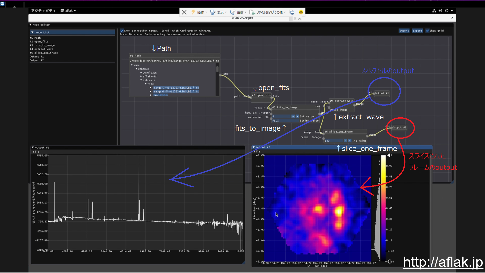

<!DOCTYPE html>
<html>

<head><meta name="generator" content="Hexo 3.8.0">
  <meta charset="utf-8">
  
  <title>天体写真とその処理過程について【後編】 | ほしよみ大学生のブログ</title>
  <meta name="viewport" content="width=device-width">
  <meta name="description" content="注意: この記事は過去の記事を移行したものです． あいさつこんにちは．先程日本天文学会での発表を終えてきましたので，その内容を簡単にまとめておきたいと思います．そして，だいぶ前の記事天体写真とその処理過程について【前編】の伏線をここで回収したいと思います．なぜこのタイミングなのか？それは読み進めて行けばわかります笑">
<meta name="keywords" content="写真,天体写真,画像処理,SI8,Adobe Photoshop,Adobe Lightroom">
<meta property="og:type" content="article">
<meta property="og:title" content="天体写真とその処理過程について【後編】">
<meta property="og:url" content="http://dabokun.github.io/2019/03/15/00000005-astrophoto-and-processing-2/index.html">
<meta property="og:site_name" content="ほしよみ大学生のブログ">
<meta property="og:description" content="注意: この記事は過去の記事を移行したものです． あいさつこんにちは．先程日本天文学会での発表を終えてきましたので，その内容を簡単にまとめておきたいと思います．そして，だいぶ前の記事天体写真とその処理過程について【前編】の伏線をここで回収したいと思います．なぜこのタイミングなのか？それは読み進めて行けばわかります笑">
<meta property="og:locale" content="ja">
<meta property="og:image" content="http://dabokun.github.io/2019/03/15/00000005-astrophoto-and-processing-2/card.jpg">
<meta property="og:updated_time" content="2019-05-19T06:42:32.698Z">
<meta name="twitter:card" content="summary_large_image">
<meta name="twitter:title" content="天体写真とその処理過程について【後編】">
<meta name="twitter:description" content="注意: この記事は過去の記事を移行したものです． あいさつこんにちは．先程日本天文学会での発表を終えてきましたので，その内容を簡単にまとめておきたいと思います．そして，だいぶ前の記事天体写真とその処理過程について【前編】の伏線をここで回収したいと思います．なぜこのタイミングなのか？それは読み進めて行けばわかります笑">
<meta name="twitter:image" content="http://dabokun.github.io/2019/03/15/00000005-astrophoto-and-processing-2/card.jpg">
<meta name="twitter:creator" content="@dabo_pic">
  
  <link rel="alternative" href="/atom.xml" title="ほしよみ大学生のブログ" type="application/atom+xml">
  
  
  <link rel="icon" href="/images/favicon.png">
  
  <link rel="stylesheet" href="/css/style.css">
  <!--[if lt IE 9]><script src="//html5shiv.googlecode.com/svn/trunk/html5.js"></script><![endif]-->
  
</head></html>
<body>
  <div id="container">
    <div class="mobile-nav-panel">
	<i class="icon-reorder icon-large"></i>
</div>
<header id="header">
	<h1 class="blog-title">
		<a href="/">ほしよみ大学生のブログ</a>
	</h1>
	<nav class="nav">
		<ul>
			<li><a href="/">Home</a></li><li><a href="/categories">Categories</a></li><li><a href="/tags">Tags</a></li><li><a href="/archives">Archives</a></li><li><a href="/about">About</a></li><li><a href="/work">Work</a></li>
			<li><a id="nav-search-btn" class="nav-icon" title="Search"></a></li>
			<li><a href="https://github.com/dabokun"></a>
			</li>
			<li><a href="https://twitter.com/dabo_pic"></a></li>
			<li><a href="/atom.xml" id="nav-rss-link" class="nav-icon" title="RSS Feed"></a>
			</li>
		</ul>
	</nav>
	<div id="search-form-wrap">
		<form action="//google.com/search" method="get" accept-charset="UTF-8" class="search-form"><input type="search" name="q" class="search-form-input" placeholder="Search"><button type="submit" class="search-form-submit">&#xF002;</button><input type="hidden" name="sitesearch" value="http://dabokun.github.io"></form>
	</div>
</header>
    <div id="main">
      <article id="post-00000005-astrophoto-and-processing-2" class="post">
	<footer class="entry-meta-header">
		<span class="meta-elements date">
			<a href="/2019/03/15/00000005-astrophoto-and-processing-2/" class="article-date">
  <time datetime="2019-03-15T09:47:00.000Z" itemprop="datePublished">2019-03-15</time>
</a>
		</span>
		<span class="meta-elements author">astr0dab0</span>
		<div class="commentscount">
			
			<a href="http://dabokun.github.io/2019/03/15/00000005-astrophoto-and-processing-2/#disqus_thread" class="article-comment-link">Comments</a>
			
		</div>
	</footer>
	
	<header class="entry-header">
		
  
    <h1 class="article-title entry-title" itemprop="name">
      天体写真とその処理過程について【後編】
    </h1>
  

	</header>
	<div class="entry-content">
		
		
		<div id="toc" class="toc-article">
			<p class="toc-title">目次</p>
			<ol class="toc"><li class="toc-item toc-level-3"><a class="toc-link" href="#あいさつ"><span class="toc-number">1.</span> <span class="toc-text">あいさつ</span></a></li><li class="toc-item toc-level-3"><a class="toc-link" href="#発表内容"><span class="toc-number">2.</span> <span class="toc-text">発表内容</span></a><ol class="toc-child"><li class="toc-item toc-level-4"><a class="toc-link" href="#背景"><span class="toc-number">2.1.</span> <span class="toc-text">背景</span></a></li><li class="toc-item toc-level-4"><a class="toc-link" href="#提案手法（AFLAK）"><span class="toc-number">2.2.</span> <span class="toc-text">提案手法（AFLAK）</span></a></li></ol></li></ol>
		</div>
		
		<p><strong>注意: この記事は過去の記事を移行したものです．</strong><br><br><br></p>
<h3 id="あいさつ"><a href="#あいさつ" class="headerlink" title="あいさつ"></a>あいさつ</h3><p>こんにちは．先程日本天文学会での発表を終えてきましたので，その内容を簡単にまとめておきたいと思います．そして，だいぶ前の記事<br><a href="/2018/12/28/00000001-astrophoto-and-processing/"><strong>天体写真とその処理過程について【前編】</strong></a><br>の伏線をここで回収したいと思います．なぜこのタイミングなのか？それは読み進めて行けばわかります笑</p>
<a id="more"></a>
<h3 id="発表内容"><a href="#発表内容" class="headerlink" title="発表内容"></a>発表内容</h3><p>今回発表してきた内容は，主にAFLAK（Advanced Framework for Learning Astrophysical Knowledge）と呼ばれる，天体データ処理用フレームワークについてでした．インストール方法等はこちら（<a href="http://aflak.jp" target="_blank" rel="noopener">http://aflak.jp</a>）をご覧ください．</p>
<h4 id="背景"><a href="#背景" class="headerlink" title="背景"></a>背景</h4><p>最近，銀河等の天体に対して，面分光と呼ばれる技術を用いて得られる多波長データと呼ばれる類のデータを解析することが天文学者の間で盛んになされています．この多波長データというのは，通常RGBの3チャンネルを持つ写真のデータとは異なり，波長方向に数千～数万もの大きな次元サイズをもつデータを指します．それぞれのチャンネルの波長幅はなんと1nmほど，天体写真を撮っている方であれば，「究極のナローバンド」と考えれば良いでしょう笑．このような大規模かつ高次元なデータを扱うソフトウェアは従来から存在しますが，基本的にコマンドベースのもの，あるいは解析内容を天文学者自らがプログラムの形で記述するようなものでした．</p>
<h4 id="提案手法（AFLAK）"><a href="#提案手法（AFLAK）" class="headerlink" title="提案手法（AFLAK）"></a>提案手法（AFLAK）</h4><p>そこで，AFLAKと呼ばれるフレームワークでは，ビジュアルプログラミング環境を提供することによって，ユーザがより効率的に解析を行うことを支援します．以下のようなメリットが挙げられます．</p>
<ul>
<li>パラメタの変更などが即座に反映され，ユーザに対する迅速なフィードバックを行う．</li>
<li><font color="red"><strong>解析そのものの内容の管理が容易となる．</strong></font>

</li>
</ul>
<p>以下のスクリーンショットをご覧ください．画面上側に何やらグラフのようなもの，画面下側に２つの出力結果が見て取れます．画面上側のエディタ（この中にあるそれぞれのボックスをノードと呼びまして，エディタ全体をノードエディタと呼びます）をユーザは操作し所望の解析を行います．データは左から右へと流れていくと考えてください．まずいちばん左上のPathというノードで，ファイルを選択します．このソフトウェアではfits形式のファイルを扱うことになっているので，選択したファイルを次のopen_fitsというノードで開きます．fitsにはHDUというデータユニット（データの塊です）が存在しており，複数の天体データを保持できるようになっているので，次のfits_to_imageというノードでどのデータを取り出すかを選択しています．この時点で，今回赤経赤緯および波長方向の三次元のデータになっていますので，ここからextract_waveノードとslice_one_frameノードを使って，結果のイメージを出しています．前者が輝度のスペクトル，後者が，ある波長でスライスした時の輝度の二次元イメージになります．</p>
<p></p>
<p>ここで，例えばslice_one_frameノードの中のパラメタを変更すると，フレームの画像はすぐに更新されます．これがユーザに対する迅速なフィードバックです．<font color="red"><strong>また，解析自体の内容はこのグラフの構造自体が持っています．このようなグラフ構造をデータとして保存するのはさほど難しくはないです．</strong></font></p>
<p>…さて，発表ではこのあと私が実装した少し複雑な解析例を提示し，天文学者が解析したものと同様の結果が出ましたということを言って，その他の解析例や課題を示して終わったわけです．</p>
<p>で，この研究に携わり始めた頃から，ずっと自分の中で考えていたことがあるんです．<br><br><br><br><br></p>
<font color="red"> ……これ，天体写真の画像処理にもめちゃくちゃ使えるのでは？</font>

<p>重要なのは，私が先程から赤で書いている部分，<br>「<font color="red"><strong>解析そのものの内容の管理が容易となる．</strong></font>」という部分です．これの「<font color="red"><strong>解析</strong></font>」を「<font color="red"><strong>現像</strong></font>」と読み替えると，理解していただけるのではないでしょうか．私が<a href="/2018/12/28/00000001-astrophoto-and-processing/">前回の記事</a>で指摘した内容を簡単にまとめるとこうです．</p>
<ul>
<li>編集過程は天体写真において，それが科学であろうと芸術であろうと重要ではないか．</li>
<li>にも関わらず，編集過程を管理している人は限りなく少ない．</li>
<li>それは人間の問題ではなく，<font color="red">ソフトウェア側の問題</font>である．もともと，ソフトウェアがそういったことを管理すべきだった．</li>
<li>解決しようという動きがある．例えばステライメージ8にはワークフローの機能が追加されている．ただし，結局レイヤー的な処理にとどまるものと言え，複雑な処理に対応できない可能性がある．</li>
</ul>
<p>私は，このAFLAKがもつ特長は，この<font color="red">ソフトウェア側の問題を根本的に解決するものとなりえる</font>と考えています．このソフトウェアでは解析の「分岐」を表現することができるんです．これがステライメージ8との違いだと考えます．<br>例えば画像をRGB分解して，あるチャンネルだけに処理をかけて合成するということ，そしてその間にかけられる処理はユーザが自由に表現できるんです．そして，何より，<font color="red">その自由な表現を，グラフの形で保存し，共有することができます（当然公開の自由はあると思いますが）．</font></p>
<p>例えば，保存されたあのあこがれの人の処理過程を使って，自分の写真で開いて試してみよう．これはパクりを教唆するわけではありません．むしろ，<font color="red">あのあこがれの人に近づくには何が必要なのか，かえっては，自分なりの表現には何が必要なのかというヒントを得る．</font>こういったことができるようになると考えます．<font color="red">科学において解析の内容を保持することは重要ですが，芸術においても重要なのではないでしょうか．</font></p>
<p>もちろん，このソフトウェアは未だ天体写真ではなく，天文学用のデータに特化したものです．どのような処理ノード，パラメタがあれば写真の用途にも使えるのかは，まだまだ検討していかなければならない段階であると思います．<br>しかし，このソフトウェアは，天体写真の「複雑な現像処理を必要とする」という特性を埋めるものであり，<font color="red">天体写真処理に革命を起こす</font>のではないかと考えています．なぜなら，もし世に出ることがあれば，それは「<font color="red">天体写真は各人が持っている画像処理の腕では実質決まらない</font>」世の訪れを示唆するものであるからです．</p>
<p>コメント，批判，提案等あるかもしれませんが，是非お願いいたします．<br><br><br></p>
<p>注意:以下コメントになります．</p>
<p>ぐっち:</p>
<blockquote>
<p>現状は「天体写真は各人が持っている画像処理の腕で実質決まってしまう」事が多いので画像処理の習得に挫折する事で天文(あるいは天体写真撮影)から遠ざかってしまう人も多いと思います｡<br>“いい天体写真”“すごい天体写真”(この定義が難しいですが)に仕上げるために施された処理過程を解析し､再現可能な処理に再構築することができれば､<br>「天体写真は各人が持っている画像処理の腕では実質決まらない」世<br>が来るかもしれません｡それこそDeepLeaningの世界でしょうか｡<br>期待しています｡</p>
</blockquote>
<p><br><br>astrodabo:</p>
<blockquote>
<p>ぐっちさん<br>コメントありがとうございます。情報工学を学んでいる人間として本文のような文章を書きました。機械学習が多くの分野で流行っていることや、機械学習による恩恵は大きい、というのは事実です。が、このような芸術的な側面ももつ領域において、なんでもコンピュータにやらせる、というのは、私としてはちょっと違うのかなと思います。<br>「天体写真は各人が持っている画像処理の腕では実質決まらない」というのは、良くも悪くも、副産物のようなものだと考えています。処理が上手い人にとってそのようなことは受け入れがたいかもしれないという意味ではデメリットにもなりますし、逆に画像処理の敷居が下がるのはメリットだとも思います。<br>それよりも私が望んでいるのは、処理プロセスを可視化することによって「自分なりの表現を見つける機会が増える」ことです。従来のレイヤー的な処理しかできないソフトウェアでは発見しにくい自分の表現の利点や欠点を発見する機会が増えることで、天体写真という趣味がさらに深まればいいなと考えています。</p>
</blockquote>
<p><br><br>ぐっち:</p>
<blockquote>
<p>4月に入ってしまいましたが､時折思い出したときにこの件について考えていました｡<br>自動車のオートマが出てきたとき､この(当時の)新技術に対してかなりネガティブな批評や反感があったことと重なりました｡｢車を操る楽しみがなくなる｣｢変速段数が少ない｣｢燃費が悪い｣などけっこう散々でした｡開発を続けてきたことと意識が変わってきたこともあり､今は自動車は大半がオートまでマニュアルの方が少なくなってしまいました｡<br><br>天体写真の画像処理については､<br>・再現性(同じ素材に対して誰が､何度やっても同じ結果が出せる)､<br>・汎用性(異なる対象に対しても同じプロセスが適用できる)､<br>・普遍性(特定のソフトやそのバージョンに依存しない)<br>を持った手法が確立できれば､天体写真における画像処理の比重が少なくなるのではないかと思います｡<br><br>これは撮影の比重が相対的に大きくなることを意味するので､撮影地､光学系､カメラ等の差や撮影時の構図の取り方や追尾の手法など､｢天体撮影｣の本質で工夫する領域が増えるのではないかと思います<br>｢撮影｣した結果が｢画像処理｣のインプットになり､この｢画像処理｣のアウトプットを使って作者の好みによる｢最後の仕上げ｣を行うようなプロセスで天体写真ができるようになれば楽しいかな､と思います｡</p>
</blockquote>
<p><br><br>astrodabo:</p>
<blockquote>
<p>ぐっちさん<br>コメントありがとうございます。新年度が始まって忙しくなかなかブログを見れておらず遅くなって申し訳ありません。<br><br>このパラダイムはもともとゲーム開発や3Dモデリング/シェーディング等の分野で使われていまして、それを画像処理フローに輸入できないかという提案なので、(確かに計算資源が近年豊富となってきているというバックグラウンドはありますが)ATのような目新しいテクニックというわけではないですね。ただ何か新しいことをしようとした時に似たような指摘や批判は免れないと考えています。<br><br>再現性、汎用性、普遍性にプラスして、本文で記述し忘れていた重要なこととして、「ユーザが思いついた処理を即座にフローの形で表現できる」、すなわちラピッドプロトタイピング可能性というものも挙げられますね。<br><br>撮影の比重が重くなるというのは本当にその通りで、構図、追尾、写真の内容で「何か面白いことをする」ということでもって、今よりももっと天体写真の表現の幅が広がればいいな、と考えています。</p>
</blockquote>

		
	</div>
	<footer class="article-footer">
		<a href="https://twitter.com/intent/tweet?text=%E5%A4%A9%E4%BD%93%E5%86%99%E7%9C%9F%E3%81%A8%E3%81%9D%E3%81%AE%E5%87%A6%E7%90%86%E9%81%8E%E7%A8%8B%E3%81%AB%E3%81%A4%E3%81%84%E3%81%A6%E3%80%90%E5%BE%8C%E7%B7%A8%E3%80%91｜%E3%81%BB%E3%81%97%E3%82%88%E3%81%BF%E5%A4%A7%E5%AD%A6%E7%94%9F%E3%81%AE%E3%83%96%E3%83%AD%E3%82%B0&url=http://dabokun.github.io/2019/03/15/00000005-astrophoto-and-processing-2/" class="twitter-share-button" target="_blank" title="Twitter"></a>
		<script async src="https://platform.twitter.com/widgets.js" charset="utf-8"></script>

		<div id="fb-root"></div>
		<script async defer crossorigin="anonymous" src="https://connect.facebook.net/ja_JP/sdk.js#xfbml=1&version=v4.0"></script>
		<div class="fb-share-button" data-href="http://dabokun.github.io/2019/03/15/00000005-astrophoto-and-processing-2/" data-layout="button_count" data-size="small"><a target="_blank" href="https://www.facebook.com/sharer/sharer.php?u=https%3A%2F%2Fdabokun.github.io%2F&amp;src=sdkpreparse" class="fb-xfbml-parse-ignore">シェア</a></div>
	</footer>
	<footer class="entry-footer">
		<div class="entry-meta-footer">
			<span class="category">
				
  <div class="article-category">
    <a class="article-category-link" href="/categories/processing/">画像処理</a>
  </div>

			</span>
			<span class=" tags">
				
  <ul class="article-tag-list"><li class="article-tag-list-item"><a class="article-tag-list-link" href="/tags/lightroom/">Adobe Lightroom</a></li><li class="article-tag-list-item"><a class="article-tag-list-link" href="/tags/photoshop/">Adobe Photoshop</a></li><li class="article-tag-list-item"><a class="article-tag-list-link" href="/tags/si8/">SI8</a></li><li class="article-tag-list-item"><a class="article-tag-list-link" href="/tags/photography/">写真</a></li><li class="article-tag-list-item"><a class="article-tag-list-link" href="/tags/astrophotography/">天体写真</a></li><li class="article-tag-list-item"><a class="article-tag-list-link" href="/tags/processing/">画像処理</a></li></ul>

			</span>
		</div>
	</footer>
	
	
<nav id="article-nav">
  
    <a href="/2019/05/11/hello/" id="article-nav-newer" class="article-nav-link-wrap">
      <strong class="article-nav-caption">Newer</strong>
      <div class="article-nav-title">
        
          ブログを移行します &amp; はじめまして
        
      </div>
    </a>
  
  
    <a href="/2019/03/01/00000004-astro-meeting-spring/" id="article-nav-older" class="article-nav-link-wrap">
      <strong class="article-nav-caption">Older</strong>
      <div class="article-nav-title">
        
          日本天文学会2019年春季年会で発表します．
        
      </div>
    </a>
  
</nav>

	
</article>


<section id="comments">
	<div id="disqus_thread">
		<noscript>Please enable JavaScript to view the <a href="//disqus.com/?ref_noscript">comments powered by
				Disqus.</a></noscript>
	</div>
</section>

    </div>
    <div class="mb-search">
  <form action="//google.com/search" method="get" accept-charset="utf-8">
    <input type="search" name="q" results="0" placeholder="Search">
    <input type="hidden" name="q" value="site:dabokun.github.io">
  </form>
</div>
<footer id="footer">
	<h1 class="footer-blog-title">
		<a href="/">ほしよみ大学生のブログ</a>
	</h1>
	<span class="copyright">
		&copy; 2020 astr0dab0<br>
		Modify from <a href="http://sanographix.github.io/tumblr/apollo/" target="_blank">Apollo</a> theme, designed by <a href="http://www.sanographix.net/" target="_blank">SANOGRAPHIX.NET</a><br>
		Powered by <a href="http://hexo.io/" target="_blank">Hexo</a>
	</span>
</footer>
    
<script>
  var disqus_shortname = 'astr0dab0';
  
  var disqus_url = 'http://dabokun.github.io/2019/03/15/00000005-astrophoto-and-processing-2/';
  
  (function(){
    var dsq = document.createElement('script');
    dsq.type = 'text/javascript';
    dsq.async = true;
    dsq.src = '//go.disqus.com/embed.js';
    (document.getElementsByTagName('head')[0] || document.getElementsByTagName('body')[0]).appendChild(dsq);
  })();
</script>


<script src="//ajax.googleapis.com/ajax/libs/jquery/2.0.3/jquery.min.js"></script>


<link rel="stylesheet" href="/fancybox/jquery.fancybox.css" media="screen" type="text/css">
<script src="/fancybox/jquery.fancybox.pack.js"></script>


<script src="/js/script.js"></script>
  </div>
</body>
</html>